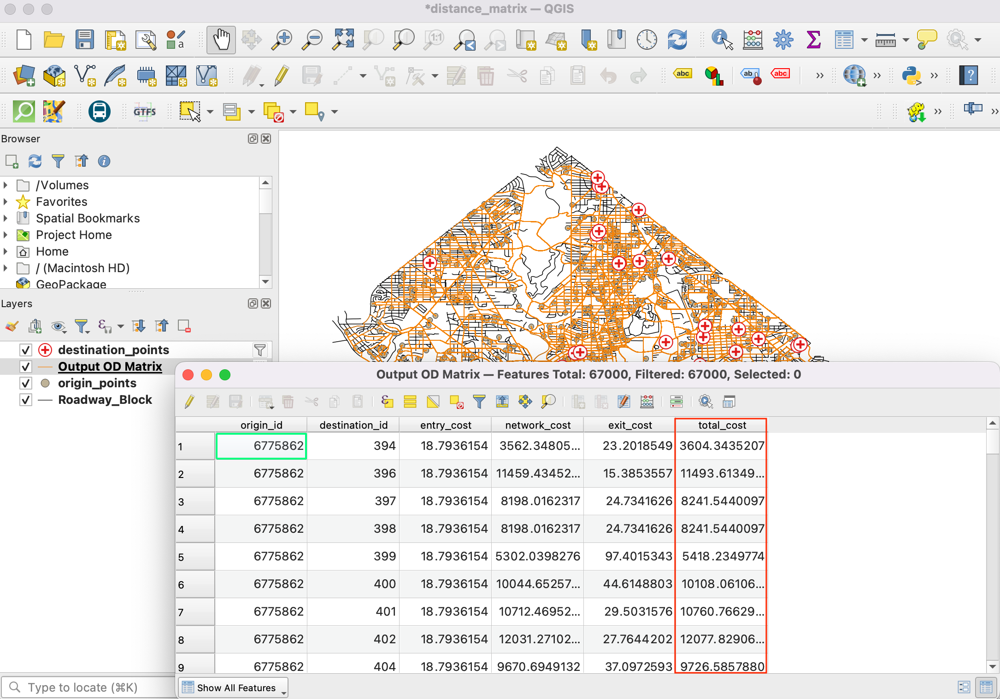
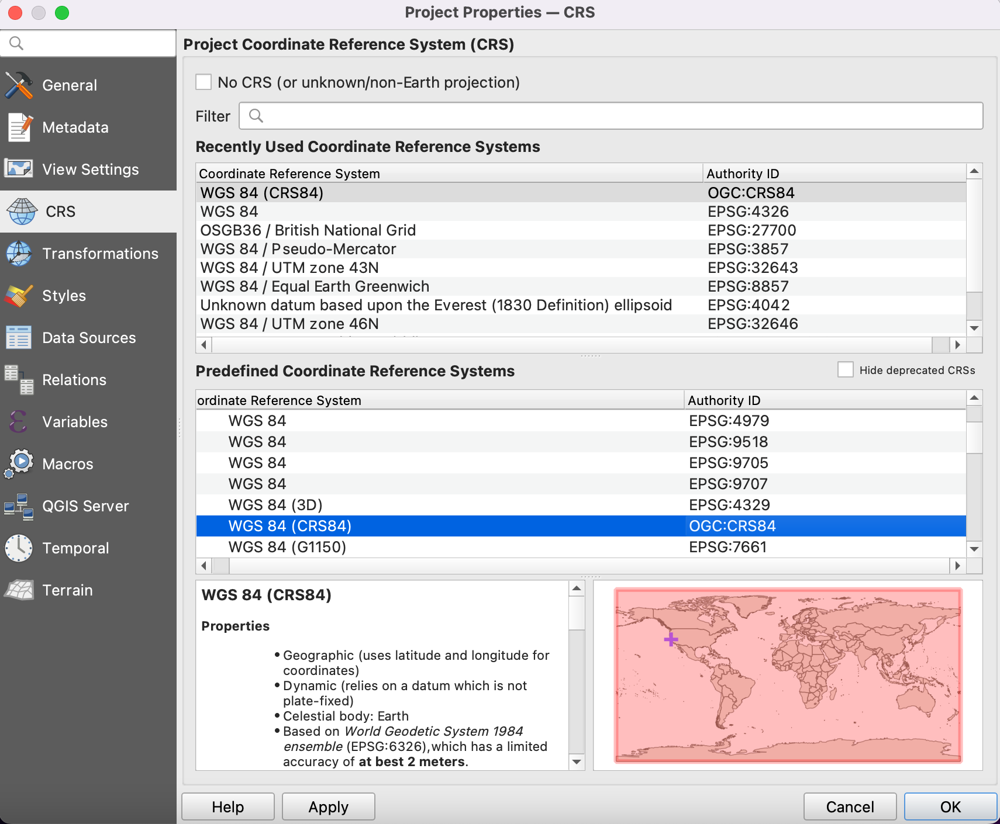
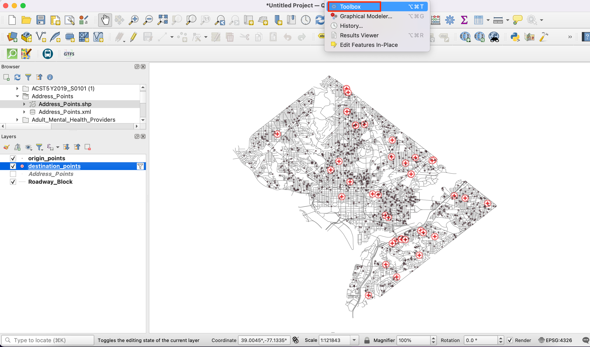
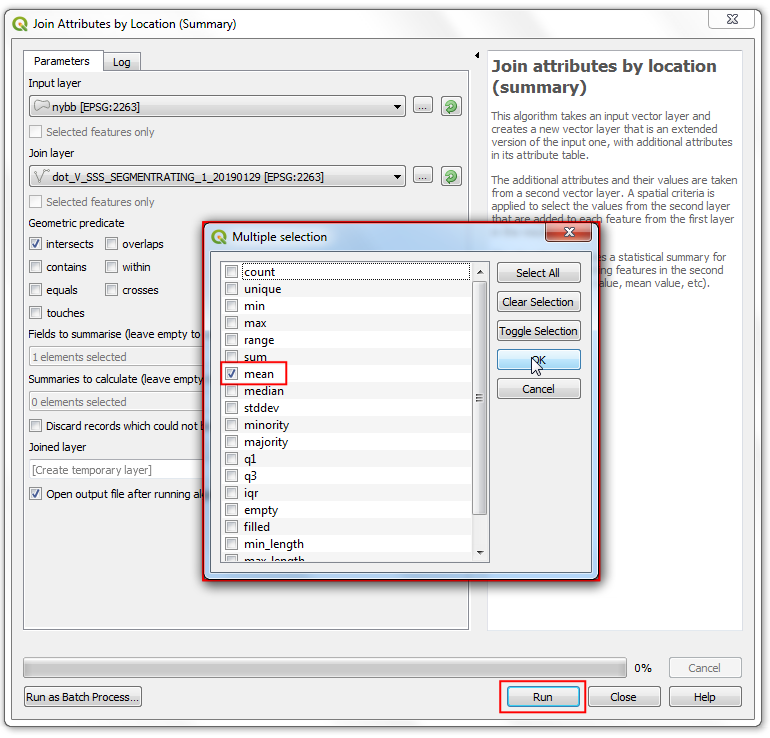
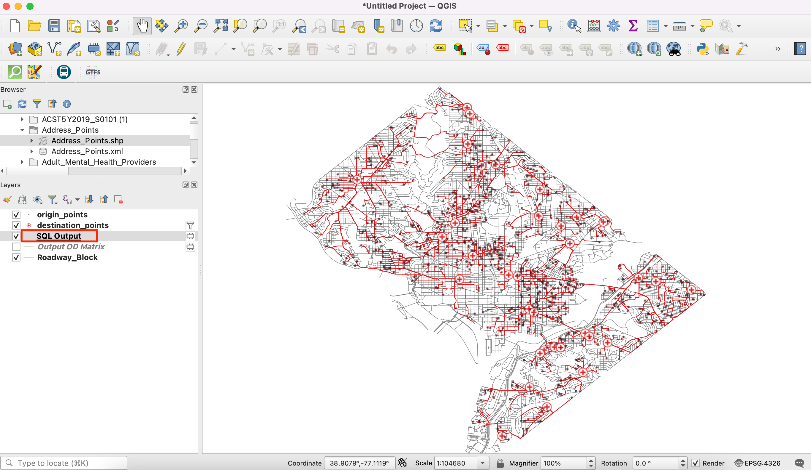

래스터 붙이기 및 자르기 (QGIS3)¶
이 예제에서는 QGIS에서 다루는 자르기와 부속세팅과 같은 기본적인 기능에 대해서 알아봅니다.
작업 개요¶
SRTM 형태로 제공하는 Sri Lanka의 고도 데이터를 내려받은 후, 각각의 데이터를 ‘merge’,합치고,’clip’, 자르기를 통해 국가행정경계 모자이크를 만드는 과정을 배울 것입니다.
이 예제에서 필요한 다른 기술¶
고도데이터를 시각화하는 “Hillshade renderer”의 사용
데이터 획득¶
Land Processes Distribyted Active Archive Center(LP DAAC)는 NASA Shuttle Radar Topography Mission (SRTM) Global 1 arc second dataset as elevation tiles 데이터를 제공합니다.
예제파일은 Derek Watkins의 30-Meter SRTM Tile Downloader <https://dwtkns.com/srtm30m/>`_에서 내려받을 수 있습니다. Sri Lanka의 SRTM 파일을 내려받으세요. 내려받을 시 `Earth Data account 가 필요합니다.

We will also need the Admin 0 - Countries shapefile from Natural Earth.
아래 링크에서 이번예제에 사용되는 샘플파일을 쉽게 내려받을 수 있습니다:
출처: [SRTM] , [NATURALEARTH]
과정¶
QGIS를 열고, Browser panel에 내려받은 파일을 불러옵니다. 압축되어있는 .hgt 개별파일들을 엽니다. ‘Ctrl’를 누른 상태로 모든 파일을 선택하여 ‘canvas’로 드래그하여 불러옵니다.

11개의 개별 레이어가 Layers 패널에 들어가고, ‘canvas’창에 보여집니다. 이제 우리는 개별 조각들을 하나의 모자이크로 합병할 것입니다. 메뉴선택창에서 ‘공간처리’ –> 툴박스를 클릭합니다.

공간처리툴박스 검색창에 ‘merge’를 입력한 후 검색결과 중 ‘GDAL —> 레스터 기타 –> 병합’ 을 찾은 후 더블클릭합니다.

‘Merge’창에서 ‘…’버튼을 클릭합니다. 11개의 레이어를 모두 선택하기 위해 ‘select all’ 버튼을 누른 후 확인버튼을 클릭합니다.

As mentioned in the dataset layer details, the input data type is 16-bit signed integer. To maintain data integrity, we should keep the same data type for the merged layer. Select
Int16as the Output data type. Also the default output data format is GeoTiff. GeoTiff files can get very large if not compressed. ChooseHigh Compressionas the Profile. Click Run.

작업이 끝났다면, “결과물”의 새 레이어가 레이어창에 생성됩니다. 이번 예제에서는 이 레이어가 레이어들 사이에 위치해있으니, 레이어를 마우스로 드래그하여 레이어창 제일 위로 끌어올려주세요.

개별 레이어를 병합한 “결과물”레이어에서 고도 데이터값도 병합된 것을 확인할 수 있습니다. 이 고도 데이터를 시각적으로 확인 할 수 있는 픽셀 값은 0-255 범위 내에 있습니다. 하지만 병합된 결과물 레이어의 픽셀 값은 저 해상도로 랜더링 한 덕분에 -14에서 2371범위 값을 가질 수 있습니다. 그럼 결과물이 더 잘보이게 바꿔보도록 할까요! 레이어 창에 ‘Open the layer Styling panel’를 클릭해주세요.

‘레이어 스타일 작업’창에서 ‘랜더 유형’을 클릭해주시고 목록 중 제일 아래에 위치한 “음영기복도”를 선택해주세요. 이 랜더링 유형은 고도 데이터를 효과적으로 표현하는 데 최적화되어있습니다.

작업영역을 자르기는 레스터 작업시 보통 유용하게 사용됩니다. 이번 예제에서, 우리가 병합한 결과물을 스리랑카 경계에 맞춰 자를 것입니다. 내려받은
ne_10m_admin_0_countries.zipfile을 열어주세요. 이 파일을 드래그에서 프로젝트 캔버스로 옮겨주세요.

Select the newly added
ne_10m_admin_0_countrieslayers in the Layers panel. Click the Select Features by area or single click button on the Attributes Toolbar. Once selected, click the polygon for Sri Lanka to select it.

‘공간처리툴박스’에서 ‘Clip’을 검색하셔서 GDAL –> Raster extraction –> ‘마스크레이어로 래스터 자르기’를 선택해주세요. 더블클릭하셔서 실행해주세요.

‘마스크레이어로 래스터 자르기’창에서 병합시킨 ‘결과물’레어어를 입력 레이어로 설정해주세요. 그리고 “ne_10m_admin_0_countries”레이어는 마스크 레어어로 설정해주세요. 마스크레이어 창 밑에 ‘선택한 객체만’을 클릭하여 활성화해주세요. ‘산출밴드에 지정한 NODATA값을 할당’에서 “0.0000”을 입력해주시고 확인해주세요. 마지막으로, 프로파일 항목에서 ‘강한 압축’을 선택하시고 ‘실행’창을 눌러주세요.

레이어창에 새로운 “결과물”창이 생성되었습니다. 이때쯤 되면, 레이어창에 많은 레이어들이 나열되어있기 때문에 새로운 결과물을 제대로 생성되었는지 구별하기 어렵습니다. 그렇다면 레이어 패널창에 ‘맵 테마 관리’에 ‘모든 레이어 숨기기’를 눌러주세요.

그다음 가장 최근에 생성된 “결과물”레이어를 활성화하고 “음영기복도”랜더링을 해주시면 됩니다.

우리가 원하는 영역으로 병합되고 편집된 스리랑카지역의 고도 데이터 레이어가 준비되었습니다.

If you want to report any issues with this tutorial, please comment below. (requires GitHub account)